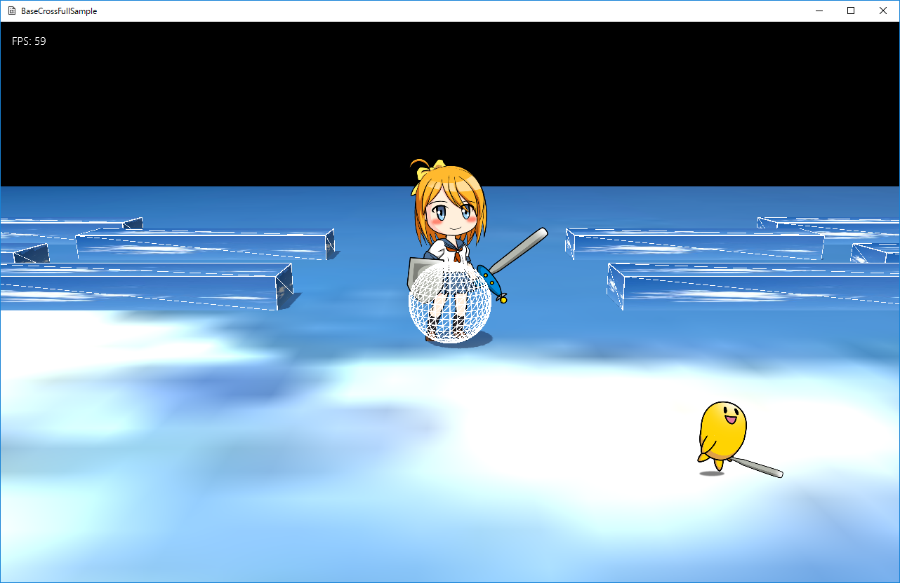

図0108a
class Player : public SS5ssae {
//中略
public:
//構築と破棄
Player(const shared_ptr<Stage>& StagePtr, const wstring& BaseDir);
virtual ~Player() {}
//初期化
virtual void OnCreate() override;
//中略
virtual void OnUpdate() override;
virtual void OnCollision(vector<shared_ptr<GameObject>>& OtherVec) override;
virtual void OnLastUpdate() override;
};
Player::Player(const shared_ptr<Stage>& StagePtr, const wstring& BaseDir) :
SS5ssae(StagePtr, BaseDir, L"character_template_3head.ssae", L"wait"),
m_MaxSpeed(40.0f), //最高速度
m_Decel(0.95f), //減速値
m_Mass(1.0f), //質量
m_ZRailIndex(0),
m_ZRailBeforIndex(0)
{
//中略
}
void Player::AnimeChangeMotion(const wstring& key, bool looped) {
ChangeAnimation(key);
SetLooped(looped);
}
EggAnime::EggAnime(const shared_ptr<Stage>& StagePtr, const wstring& BaseDir) :
SS5ssae(StagePtr, BaseDir, L"character_template_2head.ssae", L"attack1", true),
m_Span(100.0f)
{}